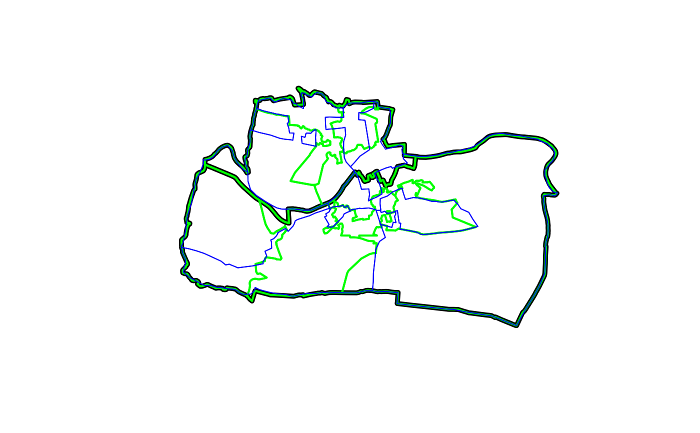

Sample of old (incongruent) and new (congruent) administrative zones from UK statistical agencies
congruent
Simple feature geographic data in a projected CRS (OSGB) with random values assigned for teaching purposes.
https://en.wikipedia.org/wiki/ONS_coding_system
if(requireNamespace("sf", quietly = TRUE)) { library(sf) plot(aggregating_zones$geometry, lwd = 5) plot(congruent$geometry, add = TRUE, border = "green", lwd = 2) plot(incongruent$geometry, add = TRUE, border = "blue", col = NA) rbind(congruent, incongruent) }#> Simple feature collection with 18 features and 2 fields #> geometry type: MULTIPOLYGON #> dimension: XY #> bbox: xmin: 417686.2 ymin: 443703 xmax: 422963 ymax: 447036.8 #> epsg (SRID): 27700 #> proj4string: +proj=tmerc +lat_0=49 +lon_0=-2 +k=0.9996012717 +x_0=400000 +y_0=-100000 +ellps=airy +towgs84=446.448,-125.157,542.06,0.15,0.247,0.842,-20.489 +units=m +no_defs #> First 10 features: #> level value geometry #> 1 Congruent 5.060934 MULTIPOLYGON (((420725.6 44... #> 2 Congruent 4.887273 MULTIPOLYGON (((419315.7 44... #> 3 Congruent 4.968365 MULTIPOLYGON (((421560 4454... #> 4 Congruent 5.493269 MULTIPOLYGON (((419023.8 44... #> 5 Congruent 4.956924 MULTIPOLYGON (((419901 4467... #> 6 Congruent 4.790662 MULTIPOLYGON (((420253 4461... #> 7 Congruent 5.233551 MULTIPOLYGON (((419788.2 44... #> 8 Congruent 4.990704 MULTIPOLYGON (((420409.5 44... #> 9 Congruent 5.136356 MULTIPOLYGON (((418708.8 44... #> 10 Incongruent 4.037919 MULTIPOLYGON (((420799.6 44...# Code used to download the data:# NOT RUN { devtools::install_github("robinlovelace/ukboundaries") library(sf) library(tmap) library(dplyr) library(ukboundaries) sel = grepl("003|004", msoa2011_lds$geo_label) aggregating_zones = st_transform(msoa2011_lds[sel, ], 27700) # find lsoas in the aggregating_zones lsoa_touching = st_transform(lsoa2011_lds, 27700)[aggregating_zones, ] lsoa_cents = st_centroid(lsoa_touching) lsoa_cents = lsoa_cents[aggregating_zones, ] sel = lsoa_touching$geo_code %in% lsoa_cents$geo_code # same for ed zones ed_touching = st_transform(ed1981, 27700)[aggregating_zones, ] ed_cents = st_centroid(ed_touching) ed_cents = ed_cents[aggregating_zones, ] incongruent_agg_ed = ed_touching[ed_cents, ] set.seed(2017) incongruent_agg_ed$value = rnorm(nrow(incongruent_agg_ed), mean = 5) congruent = aggregate(incongruent_agg_ed["value"], lsoa_touching[sel, ], mean) congruent$level = "Congruent" congruent = congruent[c("level", "value")] incongruent_cents = st_centroid(incongruent_agg_ed) aggregating_value = st_join(incongruent_cents, congruent)$value.y incongruent_agg = aggregate(incongruent_agg_ed["value"], list(aggregating_value), FUN = mean) incongruent_agg$level = "Incongruent" incongruent = incongruent_agg[c("level", "value")] summary(st_geometry_type(congruent)) summary(st_geometry_type(incongruent)) incongruent = st_cast(incongruent, "MULTIPOLYGON") summary(st_geometry_type(incongruent)) summary(st_geometry_type(aggregating_zones)) devtools::use_data(congruent, overwrite = TRUE) devtools::use_data(incongruent, overwrite = TRUE) devtools::use_data(aggregating_zones, overwrite = TRUE) # }